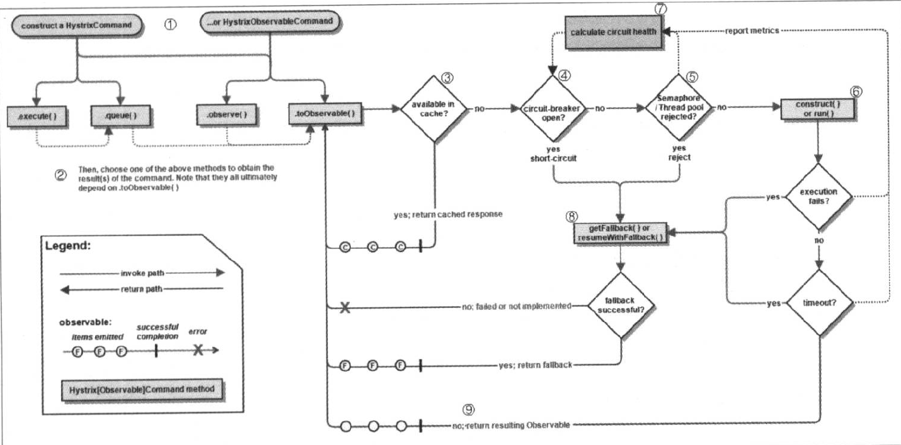
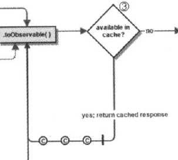
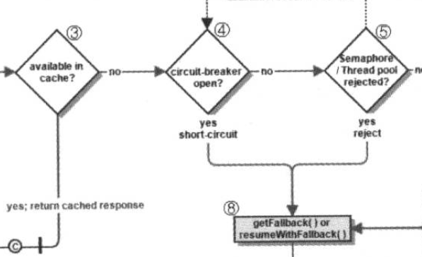
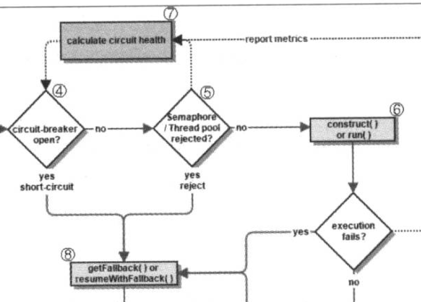
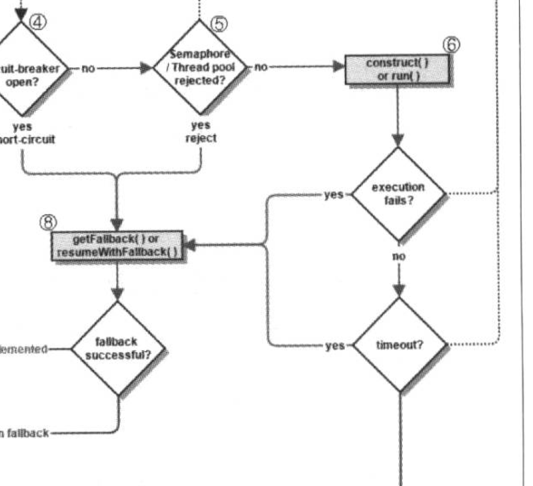

上图描述了Hystrix的工作流程，下面我们对其进行进一步的解释：
构建HystrixCommand和HystrixObservableCommand对象，用于表示对依赖服务的请求操作，同时传递所有需要的参数。而两者的区别如下：
根据图中我们看到，总共具有4中执行方式，大图如下：
我们可以看到HystrixCommand具有execute()和queue()方法，HystrixObservableCommand具有observe()和toObservable()方法。
下面我们对其进行详细的描述：
事实上所有的的执行逻辑都依赖于toObservable()方法。
注意，从这里开始是execute()、queue()和observe()、toObservable()的执行逻辑。

若当前命令的请求缓存功能是启用的，并且该命令缓存命中，缓存的结果会立刻以Observable对象的形式返回。

在命令结果没有缓存命中的时候，Hystrix在执行命令前就要检查断路器是否是打开状态。
可以看到，如果断路器是打开的就跳到第八步，否则跳到第五步。

如果与命令相关的线程池和请求队列，或者信号量已经被占满，那么会执行第八步。
需要注意的是，这里Hystrix所判断的线程并非容器的线程池，而是每个依赖服务的专有线程池。Hystrix为了保证不会因为某个依赖服务的问题影响到其他依赖服务而采用“舱壁模式”来隔离每个依赖服务。
Hystrix会根据我们编写的方法来决定采用什么样的方式去请求依赖服务。

如果上述两个方法执行失败或者执行超时，则跳到第八步，否则返回Observable对象。

如图，我们看到Hystrix会将"成功“、”失败“、”拒绝“、”超时“等信息报告给断路器，而断路器会维护一组计数器来统计这些数据。
断路器通过这些统计数据来判断断路器是否打开，来对某个服务进行”熔断/短路“,直到恢复期结束。若在恢复期结束后，该服务仍未达到健康指标，则再次”熔断/短路“。

根据上文所述，有3种情况会交给fallback处理，这种处理我们也称其为”降级服务“，三种情况分别为：
需要注意的是，在服务降级逻辑中，实现的逻辑应该是一个通用的结果，并且不要依赖于网络。如果一定要包含网络请求，那么该请求也应该被包含在HystrixObservableCommand或者HystrixCommand中，从而形成级联的降级策略，但是需要注意，最终的降级策略，仍然需要不依赖于网络。
事实上，HystrixObservableCommand执行降级策略，执行的函数与HystrixCommand还有明显不同：
如果，我们没有为命令实现降级逻辑或者降级处理逻辑中出现了异常，那么Hystrix仍然会返回一个Observable对象，但是不会发送任何数据，而是通过onError方法通知请求中断。
当降级策略失败时,Hystrix会根据不同的时间方法做出不同的处理:

顾名思义，该类描述的就是断路器，考察源码可知，该类是一个接口，需要实现如下方法：
并且接口中还有三个类：
源码如下：
static class HystrixCircuitBreakerImpl implements HystrixCircuitBreaker {
private final HystrixCommandProperties properties;
private final HystrixCommandMetrics metrics;
/* track whether this circuit is open/closed at any given point in time (default to false==closed) */
private AtomicBoolean circuitOpen = new AtomicBoolean(false);
/* when the circuit was marked open or was last allowed to try a 'singleTest' */
private AtomicLong circuitOpenedOrLastTestedTime = new AtomicLong();
protected HystrixCircuitBreakerImpl(HystrixCommandKey key, HystrixCommandGroupKey commandGroup, HystrixCommandProperties properties, HystrixCommandMetrics metrics) {
this.properties = properties;
this.metrics = metrics;
}
public void markSuccess() {
if (circuitOpen.get()) {
if (circuitOpen.compareAndSet(true, false)) {
//win the thread race to reset metrics
//Unsubscribe from the current stream to reset the health counts stream. This only affects the health counts view,
//and all other metric consumers are unaffected by the reset
metrics.resetStream();
}
}
}
@Override
public boolean allowRequest() {
if (properties.circuitBreakerForceOpen().get()) {
// properties have asked us to force the circuit open so we will allow NO requests
return false;
}
if (properties.circuitBreakerForceClosed().get()) {
// we still want to allow isOpen() to perform it's calculations so we simulate normal behavior
isOpen();
// properties have asked us to ignore errors so we will ignore the results of isOpen and just allow all traffic through
return true;
}
return !isOpen() || allowSingleTest();
}
public boolean allowSingleTest() {
long timeCircuitOpenedOrWasLastTested = circuitOpenedOrLastTestedTime.get();
// 1) if the circuit is open
// 2) and it's been longer than 'sleepWindow' since we opened the circuit
if (circuitOpen.get() && System.currentTimeMillis() > timeCircuitOpenedOrWasLastTested + properties.circuitBreakerSleepWindowInMilliseconds().get()) {
// We push the 'circuitOpenedTime' ahead by 'sleepWindow' since we have allowed one request to try.
// If it succeeds the circuit will be closed, otherwise another singleTest will be allowed at the end of the 'sleepWindow'.
if (circuitOpenedOrLastTestedTime.compareAndSet(timeCircuitOpenedOrWasLastTested, System.currentTimeMillis())) {
// if this returns true that means we set the time so we'll return true to allow the singleTest
// if it returned false it means another thread raced us and allowed the singleTest before we did
return true;
}
}
return false;
}
@Override
public boolean isOpen() {
if (circuitOpen.get()) {
// if we're open we immediately return true and don't bother attempting to 'close' ourself as that is left to allowSingleTest and a subsequent successful test to close
return true;
}
// we're closed, so let's see if errors have made us so we should trip the circuit open
HealthCounts health = metrics.getHealthCounts();
// check if we are past the statisticalWindowVolumeThreshold
if (health.getTotalRequests() < properties.circuitBreakerRequestVolumeThreshold().get()) {
// we are not past the minimum volume threshold for the statisticalWindow so we'll return false immediately and not calculate anything
return false;
}
if (health.getErrorPercentage() < properties.circuitBreakerErrorThresholdPercentage().get()) {
return false;
} else {
// our failure rate is too high, trip the circuit
if (circuitOpen.compareAndSet(false, true)) {
// if the previousValue was false then we want to set the currentTime
circuitOpenedOrLastTestedTime.set(System.currentTimeMillis());
return true;
} else {
// How could previousValue be true? If another thread was going through this code at the same time a race-condition could have
// caused another thread to set it to true already even though we were in the process of doing the same
// In this case, we know the circuit is open, so let the other thread set the currentTime and report back that the circuit is open
return true;
}
}
}
}